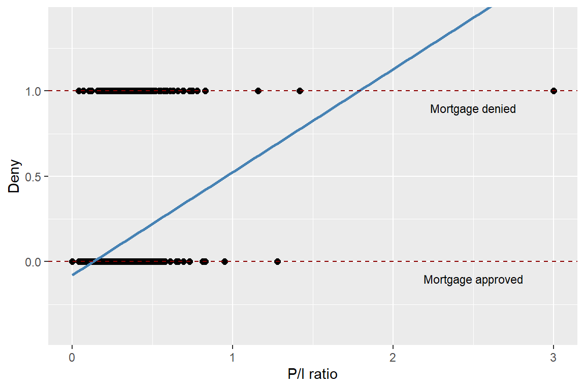
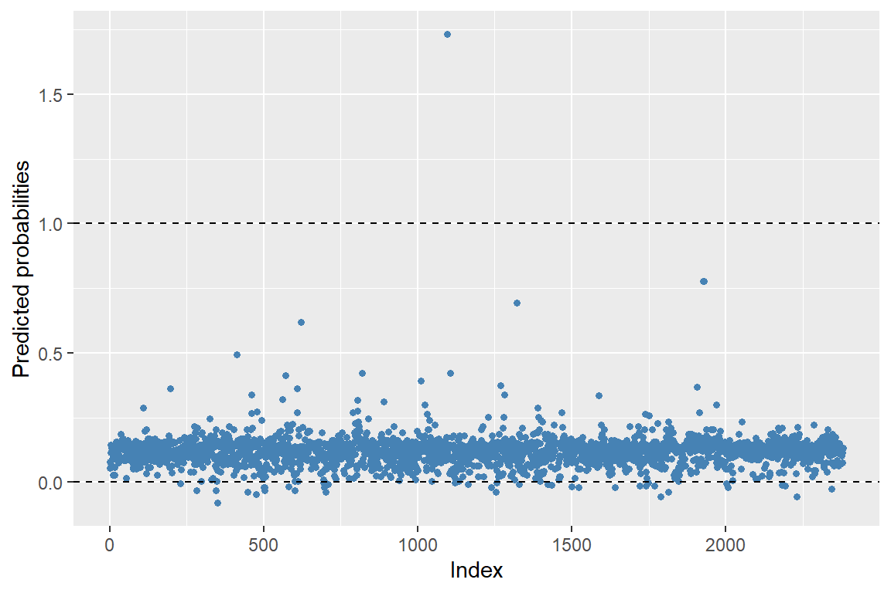
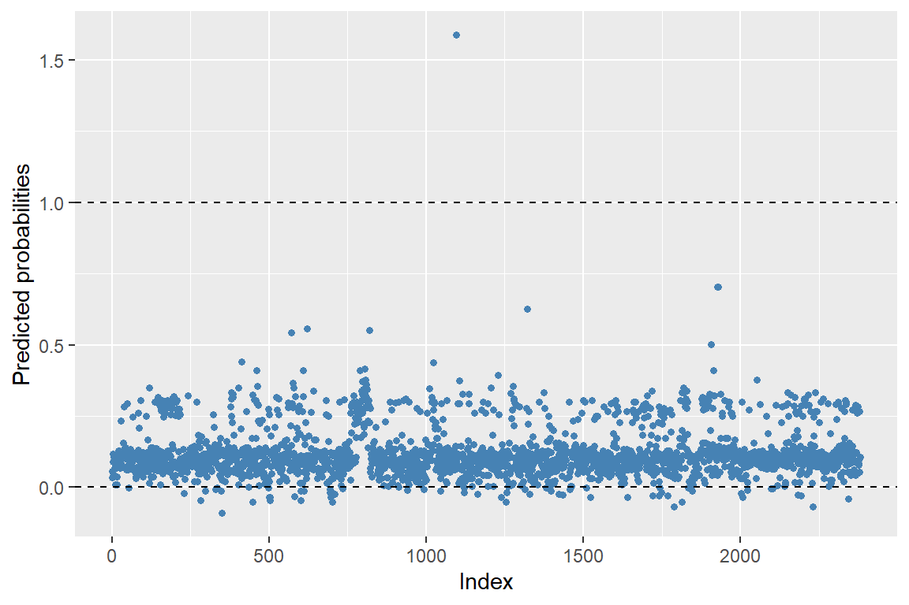
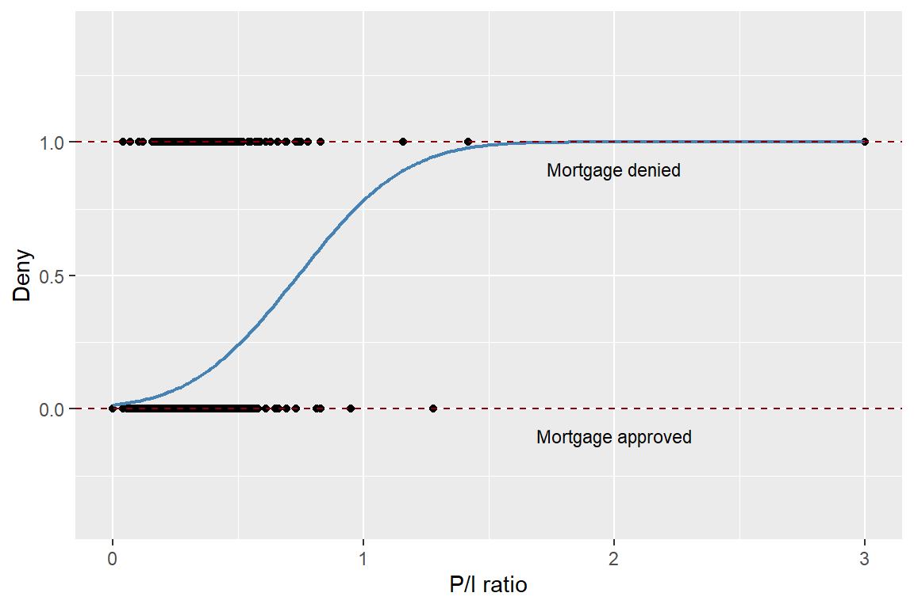
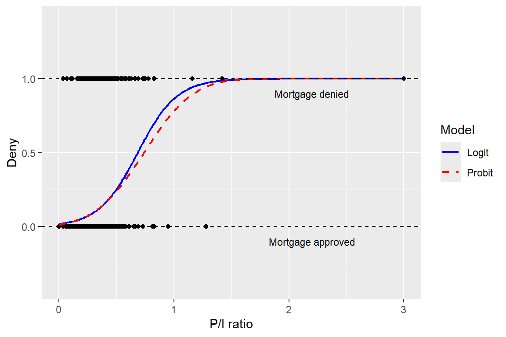

# Load the necessary libraries
library(tidyverse)
library(modelsummary)
library(mfx)
library(knitr)
library(car) 20 Regression with a Binary Dependent Variable
20.1 Binary dependent variables
In many empirical studies, the dependent variable is binary, taking on two values, say 0 and 1. For example, in the context of mortgage applications, the dependent variable could be a binary indicator variable denoting whether the mortgage application was denied (1) or approved (0). For practical reasons, the binary dependent variable is typically coded as 1 for the event of interest occurring and 0 for the event that does not occur.
In this chapter, we use a dataset on mortgage applications from the Boston metropolitan area in 1990. The dependent variable is deny, a binary variable equal to 1 if a mortgage application was denied and 0 otherwise. The explanatory variables of interest are the payment-to-income ratio (pirat), which is the ratio of total monthly debt payments to total monthly income, and an applicant race dummy variable. The dataset is contained in the hmda.csv file. The three variables from the dataset that we will use are:
deny: 1 if the mortgage application was denied, 0 otherwisepirat: Ratio of total monthly debt payments to total monthly incomeblack: 1 if the applicant is Black, 0 if White
The descriptive statistics of these variables are presented in Table 20.1. There are 2380 observations in the dataset. The average mortgage denial rate is 0.12, the average payment-to-income ratio is 0.33, and the proportion of Black applicants is 0.14.
# Import data
mydata <- read.csv("data/hmda.csv")
# Column names
names(mydata) [1] "deny" "pirat" "hirat" "lvrat" "chist" "mhist"
[7] "phist" "unemp" "selfemp" "insurance" "condomin" "black"
[13] "single" "hschool" # Descriptive statistics
datasummary_skim(mydata[, c("deny", "pirat", "black")],
type = "numeric",
output = "gt"
)| Unique | Missing Pct. | Mean | SD | Min | Median | Max | |
|---|---|---|---|---|---|---|---|
| deny | 2 | 0 | 0.1 | 0.3 | 0.0 | 0.0 | 1.0 |
| pirat | 519 | 0 | 0.3 | 0.1 | 0.0 | 0.3 | 3.0 |
| black | 2 | 0 | 0.1 | 0.3 | 0.0 | 0.0 | 1.0 |
In Figure 20.1, we present a scatter plot of the mortgage application denial (deny) against the payment-to-income ratio (pirat). Although deny is binary, we can still plot it against a continuous variable. The estimated regression line indicates a positive relationship between the payment-to-income ratio and deny.
# Scatter plot of mortgage application denial and the payment-to-income ratio
ggplot(mydata, aes(x = pirat, y = deny)) +
geom_point(color = "black", size = 2) +
geom_smooth(method = "lm", se = FALSE, color = "steelblue", linewidth = 1) +
geom_hline(yintercept = 1, linetype = "dashed", color = "darkred", linewidth = 0.4) +
geom_hline(yintercept = 0, linetype = "dashed", color = "darkred", linewidth = 0.4) +
annotate("text", x = 2.5, y = 0.9, label = "Mortgage denied", size = 3) +
annotate("text", x = 2.5, y = -0.1, label = "Mortgage approved", size = 3) +
labs(
x = "P/I ratio",
y = "Deny"
) +
coord_cartesian(ylim = c(-0.4, 1.4))
20.2 Linear probability model
A multiple linear regression model with a binary dependent variable is called a linear probability model. Thus, the linear probability model is a special case of the linear regression model where the dependent variable is binary. The linear probability model is given by \[ \begin{align} Y_i=\beta_0+\beta_1X_{1i}+\beta_2X_{2i}+\cdots+\beta_kX_{ki}+u_i, \end{align} \]
where \(Y_i\in\{0,1\}\), \(X_{1i},X_{2i},\ldots,X_{ki}\) are the explanatory variables, \(\beta_0,\beta_1,\ldots,\beta_k\) are the coefficients, and \(u_i\) is the error term. Because \(Y_i\) is a binary variable, we have \[ \begin{align*} &\E\left(Y_i|X_{1i},X_{2i},\ldots,X_{ki}\right)=0\times P(Y_i=0|X_{1i},X_{2i},\ldots,X_{ki})\\ &+1\times P(Y_i=1|X_{1i},X_{2i},\ldots,X_{ki})=P(Y_i=1|X_{1i},X_{2i},\ldots,X_{ki}). \end{align*} \]
Then, under the zero-conditional mean assumption \(\E\left(u_i|X_{1i},X_{i2},\ldots,X_{ik}\right)=0\), we have \(\E\left(Y_i|X_{1i},X_{2i},\ldots,X_{ki}\right)=\beta_0+\beta_1X_{1i}+\beta_2X_{2i}+\ldots+\beta_kX_{ki}\). Thus, the population regression function is given by \[ \begin{align} P(Y_i=1|X_{1i},X_{2i},\ldots,X_{ki})=\beta_0+\beta_1X_{1i}+\beta_2X_{2i}+\ldots+\beta_kX_{ki}. \end{align} \tag{20.1}\]
The population regression line in Equation 20.1 indicates that the coefficient \(\beta_j\) gives the effect of one unit change in \(X_j\) on the probability that \(Y=1\), holding other variables constant.
Almost all tools developed for the multiple linear regression model can be applied to the linear probability model. In particular, we can use the OLS estimator to estimate the coefficients in the linear probability model. Inference using t-statistics, confidence intervals, and F-statistics is conducted in the same way as in the multiple linear regression model.
By construction, the errors in the linear probability model are inherently heteroskedastic, which can be seen from
\[ \begin{align} u_i= \begin{cases} 1-P(Y_i=1|X_{1i},X_{2i},\ldots,X_{ki}),\,&\text{with}\,P(Y_i=1|X_{1i},X_{2i},\ldots,X_{ki}),\\ -P(Y_i=1|X_{1i},X_{2i},\ldots,X_{ki}),\,&\text{with}\, 1-P(Y_i=1|X_{1i},X_{2i},\ldots,X_{ki}). \end{cases} \end{align} \]
Thus, the conditional variance of \(u_i\) is given by \[ \begin{align} &\var(u_i|X_{1i},X_{2i},\ldots,X_{ki})=\var(Y_i|X_{1i},X_{2i},\ldots,X_{ki})\\ &=P(Y_i=1|X_{1i},X_{2i},\ldots,X_{ki})\left(1-P(Y_i=1|X_{1i},X_{2i},\ldots,X_{ki})\right). \end{align} \]
Therefore, we should use heteroskedasticity-robust standard errors to obtain valid inference in the linear probability model.
Using the mortgage dataset, we consider the following linear probability models: \[ \begin{align*} &\text{Model 1}:\quad{\tt deny}=\beta_0+\beta_1{\tt pirat}+u,\\ &\text{Model 2}:\quad {\tt deny}=\beta_0+\beta_1{\tt pirat}+\beta_2{\tt black}+u. \end{align*} \]
We use the following code chunk to estimate these models and then present the estimation results in Table 20.2.
# Model 1
r1 <- lm(deny ~ pirat, data = mydata)
# Model 2
r2 <- lm(deny ~ pirat + black, data = mydata)# Estimation results for the linear probability model
modelsummary(list("Model 1" = r1, "Model 2" = r2),
vcov = "HC1",
stars = TRUE,
fmt = 3,
output = "gt"
)| Model 1 | Model 2 | |
|---|---|---|
| (Intercept) | -0.080* | -0.091** |
| (0.032) | (0.029) | |
| pirat | 0.604*** | 0.559*** |
| (0.098) | (0.089) | |
| black | 0.177*** | |
| (0.025) | ||
| Num.Obs. | 2380 | 2380 |
| R2 | 0.040 | 0.076 |
| R2 Adj. | 0.039 | 0.075 |
| AIC | 1308.8 | 1219.2 |
| BIC | 1326.2 | 1242.3 |
| Log.Lik. | -651.424 | -605.611 |
| F | 37.557 | 49.387 |
| RMSE | 0.32 | 0.31 |
| Std.Errors | HC1 | HC1 |
| + p < 0.1, * p < 0.05, ** p < 0.01, *** p < 0.001 | ||
According to the estimation results in Table 20.2, the estimated linear probability models are \[ \begin{align*} &\text{Model 1}:\quad\hat{P}({\tt deny}=1|{\tt pirat})=-0.080+0.604{\tt pirat},\\ &\text{Model 2}:\quad\hat{P}({\tt deny}=1|{\tt pirat},{\tt black})=-0.091+0.559{\tt pirat}+0.177{\tt black}. \end{align*} \]
According to Model 1, if pirat increases by one percentage point (i.e., if pirat increases by 0.01), the probability of denial increases by \(0.604 \times 0.01 = 0.00604 \approx 0.6\%\). According to Model 2, if pirat increases by one percentage point (i.e., by 0.01), the probability of denial increases by \(0.559 \times 0.01 = 0.00559 \approx 0.6\%\), holding black constant. Additionally, holding pirat constant, being Black increases the probability of a mortgage application denial by about \(17.7\%\). That is, a black applicant is \(17.7\) percentage points more likely to have their mortgage application denied compared to a white applicant, holding constant their payment-to-income ratio.
Although the linear probability model is easy to estimate and interpret, it has two main drawbacks. The first drawback is that the predicted probabilities from the linear probability model can be less than 0 or greater than 1. We assume that the population regression function is specified as \(P(Y_i=1|X_{1i},X_{2i},\ldots,X_{ki})=\beta_0+\beta_1X_{1i}+\beta_2X_{2i}+\ldots+\beta_kX_{ki}\). In estimating this function, we do not constrain the predicted probabilities to lie within the valid interval [0,1]. In Figure 20.2 and Figure 20.3, we present the predicted probabilities for Models 1 and 2. These figures show that some of the predicted probabilities fall outside the valid interval [0,1].
# Predicted values
pred1 <- predict(r1)
# Create a data frame for plotting
plotdata <- data.frame(
index = seq_along(pred1),
pred = pred1
)
# Plot
ggplot(plotdata, aes(x = index, y = pred)) +
geom_point(color = "steelblue", size = 1.2) +
geom_hline(yintercept = 0, linetype = "dashed", linewidth = 0.4) +
geom_hline(yintercept = 1, linetype = "dashed", linewidth = 0.4) +
labs(
x = "Index",
y = "Predicted probabilities"
)
# Predicted values from Model 2
pred2 <- predict(r2)
# Create a data frame for plotting
plotdata <- data.frame(
index = seq_along(pred2),
pred = pred2
)
# Plot
ggplot(plotdata, aes(x = index, y = pred)) +
geom_point(color = "steelblue", size = 1.2) +
geom_hline(yintercept = 0, linetype = "dashed", linewidth = 0.4) +
geom_hline(yintercept = 1, linetype = "dashed", linewidth = 0.4) +
labs(
x = "Index",
y = "Predicted probabilities"
)
The second drawback of the linear probability model is that we assume a linear relationship between the explanatory variables and \(P(Y_i=1|X_{1i},X_{2i},\ldots,X_{ki})\). For instance, in our mortgage denial example, the effect of the payment-to-income ratio on the probability of mortgage denial is constant and given by \(\beta_1\). However, the effect on the probability of mortgage denial can be different at different levels of the payment-to-income ratio.
20.3 Probit and logit models
When the dependent variable is binary, we show that \(\E\left(Y_i|X_{1i},X_{2i},\ldots,X_{ki}\right) = P(Y_i = 1|X_{1i},X_{2i},\ldots,X_{ki})\). Since probabilities lie in [0, 1], it is natural to use a nonlinear model to enforce these bounds when modeling \(P(Y_i = 1|X_{1i},X_{2i},\ldots,X_{ki})\). Two popular nonlinear models for binary dependent variables are the probit and logit models. These models are based on the cumulative standard normal distribution function \(\Phi(\cdot)\), and the logistic distribution function \(F(\cdot)\), respectively.
20.3.1 Probit model
In the Probit model, we use the cumulative standard normal distribution function to specify \(P(Y_i=1|X_{1i},X_{2i},\ldots,X_{ki})\): \[ \begin{align} P(Y_i=1|X_{1i},X_{2i},\ldots,X_{ki})=\Phi(\beta_0+\beta_1X_{1i}+\beta_2X_{2i}+\ldots+\beta_kX_{ki}), \end{align} \]
where \(\Phi(\cdot)\) is the the cumulative standard normal distribution function (cdf).
Example 20.1 Assume that there is a single regress such that \(P(Y=1|X=x)=\Phi(\beta_0+\beta_1 x)\). In this specification, \(z=\beta_0+\beta_1x\) plays the role of a quantile: \[ \begin{align} \Phi(\beta_0+\beta_1 x)=\Phi(z)=P(Z\leq z), \end{align} \] where \(Z\sim N(0,1)\). Suppose that \(\beta_0=-2\), \(\beta_1=3\) and \(X=0.4\). Then, we have \[ \begin{align*} P(Y=1|X=0.4)=\Phi(-2+4\times0.4)=\Phi(-0.8)\approx0.212. \end{align*} \]
# Probit model
X <- 0.4
beta0 <- -2
beta1 <- 3
z <- beta0 + beta1 * X
probability <- pnorm(z)
cat("Predicted probability:", round(probability, 3))Predicted probability: 0.212Thus, when \(X=0.4\), the predicted probability that \(Y=1\) is \(0.212\). Since \(z=\beta_0+\beta_1x\), the sign of \(\beta_1\) gives the direction of the relationship between \(X\) and the probability of \(Y = 1\). Thus, if \(\beta_1>0\), then the probability of \(Y = 1\) increases as \(X\) increases.
The sign of \(\beta_j\) in the probit model gives the direction of the relationship between \(X_j\) and \(P(Y_i=1|X_{1i},X_{2i},\ldots,X_{ki})\) for \(j=1,2,\ldots,k\). However, unlike in the linear probability model, the magnitude of the effect is not directly given by \(\beta_j\); instead, it depends on the values of the regressors and the estimated coefficients. We can determine this effect by computing the change in the predicted probability of \(Y = 1\) when \(X_j\) changes by one unit.
For our mortgage applications data, we consider the following probit models: \[ \begin{align} &\text{Model 1}:\quad P({\tt deny}=1|{\tt pirat})=\Phi\left(\beta_0+\beta_1{\tt pirat}\right),\\ &\text{Model 2}:\quad P\left({\tt deny}=1|{\tt pirat},{\tt black}\right)=\Phi\left(\beta_0+\beta_1{\tt pirat}+\beta_2{\tt black}\right). \end{align} \]
The probit models can be estimated using the glm function in R with the family argument set to binomial(link = "probit").
# Model 1: Probit regression
r1 <- glm(deny ~ pirat,
data = mydata,
family = binomial(link = "probit")
)
# Model 2: Probit regression with additional predictor
r2 <- glm(deny ~ pirat + black,
data = mydata,
family = binomial(link = "probit")
)# Estimation results for the probit model
modelsummary(list("Model 1" = r1, "Model 2" = r2),
vcov = "HC1",
stars = TRUE,
fmt = 3,
output = "gt"
)| Model 1 | Model 2 | |
|---|---|---|
| (Intercept) | -2.194*** | -2.259*** |
| (0.189) | (0.177) | |
| pirat | 2.968*** | 2.742*** |
| (0.537) | (0.498) | |
| black | 0.708*** | |
| (0.083) | ||
| Num.Obs. | 2380 | 2380 |
| AIC | 1667.6 | 1600.3 |
| BIC | 1679.1 | 1617.6 |
| Log.Lik. | -831.792 | -797.136 |
| F | 30.547 | 55.646 |
| RMSE | 0.32 | 0.31 |
| Std.Errors | HC1 | HC1 |
| + p < 0.1, * p < 0.05, ** p < 0.01, *** p < 0.001 | ||
According to the estimation results in Table 20.3, the estimated models are \[ \begin{align*} &\text{Model 1}:\quad \hat{P}({\tt deny}=1|{\tt pirat})=\Phi\left(-2.194+2.968{\tt pirat}\right),\\ &\text{Model 2}:\quad \hat{P}({\tt deny}=1|{\tt pirat},{\tt black})=\Phi\left(-2.259+2.742{\tt pirat}+0.708{\tt black}\right), \end{align*} \]
where \(\hat{P}({\tt deny}=1|{\tt pirat})\) and \(\hat{P}({\tt deny}=1|{\tt pirat},{\tt black})\) are the predicted probabilities.
In Figure 20.4, we present the scatter plot between deny and pirat along with the predicted probabilities based on the first model. Note that the normal cumulative distribution function (cdf) ensures that all predicted probabilities are in the interval [0, 1].
# Create grid of pirat values
x <- seq(0, 3, length.out = 300)
# Predicted probabilities from Model 1
newdata <- data.frame(pirat = x)
y <- predict(r1, newdata = newdata, type = "response")
preddata <- data.frame(pirat = x, prob = y)
# Plot
ggplot(mydata, aes(x = pirat, y = deny)) +
geom_point(color = "black", size = 1.5) +
geom_line(data = preddata, aes(x = pirat, y = prob),
color = "steelblue", linewidth = 0.8) +
geom_hline(yintercept = 1, linetype = "dashed", color = "darkred") +
geom_hline(yintercept = 0, linetype = "dashed", color = "darkred") +
annotate("text", x = 2, y = 0.9, label = "Mortgage denied", size = 3) +
annotate("text", x = 2, y = -0.1, label = "Mortgage approved", size = 3) +
labs(
x = "P/I ratio",
y = "Deny"
) +
coord_cartesian(ylim = c(-0.4, 1.4))
In Model 1, the predicted change in the denial probability when pirat increases from \(0.3\) to \(0.4\) can be computed as \[
\begin{align*}
&\Delta \hat{P}({\tt deny}=1|{\tt pirat})\\
&=\Phi\left(-2.194+2.968\times 0.4\right)- \Phi\left(-2.194+2.968\times 0.3\right)\approx0.060.
\end{align*}
\]
# Predicted probabilities for pirat = 0.3 and pirat = 0.4
new_data <- data.frame(pirat = c(0.3, 0.4))
predictions <- predict(r1, newdata = new_data, type = "response")
# Compute difference in probabilities
probability_difference <- diff(predictions)
cat(
"Difference in predicted probabilities:",
round(probability_difference, 3)
)Difference in predicted probabilities: 0.061Using Model 2, for a white and a black applicant with pirat = 0.3, we compute the predicted denial probabilities as follows: \[
\begin{align*}
&\hat{P}({\tt deny}=1|{\tt pirat}=0.3,{\tt black}=0)=\Phi\left(-2.259+2.742\times0.3+0.708\times0\right)\approx0.075,\\
&\hat{P}({\tt deny}=1|{\tt pirat}=0.3,{\tt black}=1)=\Phi\left(-2.259+2.742\times0.3+0.708\times1\right)\approx0.233.
\end{align*}
\]
# Predicted probabilities for the white and black applicants with pirat = 0.3
new_data <- data.frame(
pirat = c(0.3, 0.3),
black = c(0, 1)
)
# Predicted probabilities
predictions <- predict(r2, newdata = new_data, type = "response")
# Print predicted probabilities
cat("Predicted denial probability for the white applicant:",
round(predictions[1], 3))Predicted denial probability for the white applicant: 0.075cat("Predicted denial probability for the black applicant:",
round(predictions[2], 3))Predicted denial probability for the black applicant: 0.233# Compute difference in predicted probabilities
probability_difference <- diff(predictions)
cat("Difference in predicted denial probabilities:",
round(probability_difference, 3))Difference in predicted denial probabilities: 0.158These computations indicates that the difference in denial probabilities between these two hypothetical applicants is \(15.8\) percentage points.
The partial effects can be computed using the probitmfx() function from the mfx package. We can compute the partial effects at the average (PEA) and the average partial effect (APE) for both models. For the first model, both marginal effects are approximately \(0.56\). For the second model, there is a small difference between the two marginal effects.
# Partial effects at the average for Model 1
probitmfx(deny ~ pirat, atmean = "TRUE", data = mydata)Call:
probitmfx(formula = deny ~ pirat, data = mydata, atmean = "TRUE")
Marginal Effects:
dF/dx Std. Err. z P>|z|
pirat 0.567808 0.073595 7.7153 1.207e-14 ***
---
Signif. codes: 0 '***' 0.001 '**' 0.01 '*' 0.05 '.' 0.1 ' ' 1# Average partial effect (APE) for Model 1
probitmfx(deny ~ pirat, atmean = "FALSE", data = mydata)Call:
probitmfx(formula = deny ~ pirat, data = mydata, atmean = "FALSE")
Marginal Effects:
dF/dx Std. Err. z P>|z|
pirat 0.566475 0.073121 7.7471 9.403e-15 ***
---
Signif. codes: 0 '***' 0.001 '**' 0.01 '*' 0.05 '.' 0.1 ' ' 1# Partial effects at the average for Model 2
probitmfx(deny ~ pirat + black, atmean = "TRUE", data = mydata)Call:
probitmfx(formula = deny ~ pirat + black, data = mydata, atmean = "TRUE")
Marginal Effects:
dF/dx Std. Err. z P>|z|
pirat 0.500219 0.069456 7.2019 5.936e-13 ***
black 0.171688 0.024695 6.9523 3.595e-12 ***
---
Signif. codes: 0 '***' 0.001 '**' 0.01 '*' 0.05 '.' 0.1 ' ' 1
dF/dx is for discrete change for the following variables:
[1] "black"# Average partial effect (APE) for Model 1
probitmfx(deny ~ pirat + black, atmean = "FALSE", data = mydata)Call:
probitmfx(formula = deny ~ pirat + black, data = mydata, atmean = "FALSE")
Marginal Effects:
dF/dx Std. Err. z P>|z|
pirat 0.501420 0.069012 7.2657 3.711e-13 ***
black 0.169592 0.024243 6.9955 2.644e-12 ***
---
Signif. codes: 0 '***' 0.001 '**' 0.01 '*' 0.05 '.' 0.1 ' ' 1
dF/dx is for discrete change for the following variables:
[1] "black"20.3.2 Logit model
In the logit model, we use the logistic distribution function to specify \(P(Y_i=1|X_{1i},X_{2i},\ldots,X_{ki})\): \[ \begin{align} P(Y_i=1|X_{1i},X_{2i},\ldots,X_{ki})=F(\beta_0+\beta_1X_{1i}+\beta_2X_{2i}+\ldots+\beta_kX_{ki}), \end{align} \]
where \(F(\cdot)\) is the logistic distribution function. The logistic distribution function is defined as \(F(z)=\frac{1}{1+\exp(-z)}\). Thus, in the logit model, the conditional probability of \(Y_i=1\) is specified as \[ \begin{align} P(Y_i=1|X_{1i},X_{2i},\ldots,X_{ki})=\frac{1}{1+\exp\left(-\left(\beta_0+\beta_1 X_{1i}+\beta_2 X_{2i}+\ldots+\beta_k X_{ki}\right)\right)}. \end{align} \]
As in the case of the probit model, the sign of the coefficient in the logit model indicates the direction of the relationship between the explanatory variable and the probability of the event occurring. For the marginal effects (the partial effects), we can use the approach described in Key Concept 18.2.
For our mortgage data applications, we consider the following logit models: \[ \begin{align} &\text{Model 1}:\quad P({\tt deny}=1|{\tt pirat})=F\left(\beta_0+\beta_1{\tt pirat}\right),\\ &\text{Model 2}:\quad P\left({\tt deny}=1|{\tt pirat},{\tt black}\right)=F\left(\beta_0+\beta_1{\tt pirat}+\beta_2{\tt black}\right). \end{align} \]
The logit model is estimated using the glm function in R with the family argument set to binomial(link = "logit").
# Model 1: Logistic regression with 'pirat' as predictor
r1 <- glm(deny ~ pirat,
data = mydata,
family = binomial(link = "logit")
)
# Model 2: Logistic regression with 'pirat' and 'black' as predictors
r2 <- glm(deny ~ pirat + black,
data = mydata,
family = binomial(link = "logit")
)# Estimation results for the logit model
modelsummary(list("Model 1" = r1, "Model 2" = r2),
vcov = "HC1",
stars = TRUE,
fmt = 3,
output = "gt"
)| Model 1 | Model 2 | |
|---|---|---|
| (Intercept) | -4.028*** | -4.126*** |
| (0.359) | (0.346) | |
| pirat | 5.884*** | 5.370*** |
| (1.000) | (0.964) | |
| black | 1.273*** | |
| (0.146) | ||
| Num.Obs. | 2380 | 2380 |
| AIC | 1664.2 | 1597.4 |
| BIC | 1675.7 | 1614.7 |
| Log.Lik. | -830.094 | -795.695 |
| F | 34.617 | 58.824 |
| RMSE | 0.32 | 0.31 |
| Std.Errors | HC1 | HC1 |
| + p < 0.1, * p < 0.05, ** p < 0.01, *** p < 0.001 | ||
The estimation results are presented in Table 20.4. According to the estimation results, the estimated logit models are \[ \begin{align*} &\text{Model 1}:\quad\hat{P}({\tt deny}=1|{\tt pirat})=F\left(-4.028+5.884{\tt pirat}\right),\\ &\text{Model 2}:\quad\hat{P}({\tt deny}=1|{\tt pirat},{\tt black})=F\left(-4.126+5.370{\tt pirat}+1.273{\tt black}\right), \end{align*} \]
Using estimated Model 2, we compute the predicted denial probabilities for a white and a black applicant with pirat = 0.3 as follows: \[
\begin{align*}
&\hat{P}({\tt deny}=1|{\tt pirat}=0.3,{\tt black}=0)=F\left(-4.126+5.370{\tt pirat}+1.273{\tt black}\right)\approx0.075,\\
&\hat{P}({\tt deny}=1|{\tt pirat}=0.3,{\tt black}=1)=F\left(-4.126+5.370{\tt pirat}+1.273{\tt black}\right)\approx0.230.
\end{align*}
\]
# Predicted probabilities for black = 0 and black = 1 with pirat = 0.3
new_data <- data.frame(
pirat = c(0.3, 0.3),
black = c(0, 1)
)
# Predicted probabilities
predictions <- predict(r2, newdata = new_data, type = "response")
# Print predicted probabilities
cat(
"Predicted denial probability for the white applicant:",
round(predictions[1], 3)
)Predicted denial probability for the white applicant: 0.075cat(
"Predicted denial probability for the black applicant:",
round(predictions[2], 3)
)Predicted denial probability for the black applicant: 0.224# Compute difference in predicted probabilities
probability_difference <- diff(predictions)
cat(
"Difference in predicted probabilities:",
round(probability_difference, 2)
)Difference in predicted probabilities: 0.15These computations indicate that for a white applicant with pirat = 0.3, the predicted denial probability is \(7.5\%\), while for a black applicant with pirat = 0.3, it is \(23\%\). The difference in denial probabilities between these two hypothetical applicants is approximately \(15\) percentage points.
The logit and probit regressions provide similar predicted probabilities. In Figure 20.5, we plot the predicted probabilities based on Model 1 for both probit and logit regressions. The differences between predicted probabilities are small. Historically, the logit model has been more popular than the probit model because of its computational advantages. However, given the availability of modern computational tools, the choice between the probit and logit models is often based on the researcher’s preference.
# Fit Probit and Logit models
probit <- glm(deny ~ pirat, data = mydata, family = binomial(link = "probit"))
logit <- glm(deny ~ pirat, data = mydata, family = binomial(link = "logit"))
# Create grid of pirat values
x <- seq(0, 3, length.out = 300)
newdata <- data.frame(pirat = x)
# Predicted probabilities
y_probit <- predict(probit, newdata = newdata, type = "response")
y_logit <- predict(logit, newdata = newdata, type = "response")
# Combine into a data frame for plotting
plotdata <- data.frame(
pirat = rep(x, 2),
prob = c(y_probit, y_logit),
model = rep(c("Probit", "Logit"), each = length(x))
)
# Plot
ggplot(mydata, aes(x = pirat, y = deny)) +
geom_point(color = "black", size = 1.5) +
geom_line(data = plotdata, aes(x = pirat, y = prob, color = model, linetype = model), linewidth = 0.8) +
geom_hline(yintercept = 1, linetype = "dashed", color = "black") +
geom_hline(yintercept = 0, linetype = "dashed", color = "black") +
annotate("text", x = 2.2, y = 0.9, label = "Mortgage denied", size = 3) +
annotate("text", x = 2.2, y = -0.1, label = "Mortgage approved", size = 3) +
scale_color_manual(values = c("blue", "red")) +
scale_linetype_manual(values = c("solid", "dashed")) +
labs(
x = "P/I ratio",
y = "Deny",
color = "Model",
linetype = "Model"
) +
coord_cartesian(ylim = c(-0.4, 1.4))
20.4 Estimation and inference in the probit and logit models
We use the maximum likelihood estimator (MLE) to estimate the probit and logit models. To define this estimator, we first need to define the likelihood function.
Definition 20.1 (Likelihood function) The likelihood function is the joint probability distribution of the data, given the unknown coefficients.
Let \(f(\bs{\beta}|\bs{Y},\bs{X})\) be the likelihood function of the probit model, where \(\bs{\beta}=(\beta_0,\beta_1,\ldots,\beta_k)^{'}\) and \(\bs{X}=(X^{'}_1,X^{'}_2,\ldots,X^{'}_k)^{'}\), and \(\bs{Y}=(Y_1,Y_2,\ldots,Y_n)^{'}\). For the probit model, we have
\[ \begin{align*} &P(Y_i=1|X_{1i},X_{2i},\ldots,X_{ki})=\Phi(\beta_0+\beta_1X_{1i}+\beta_2X_{2i}+\ldots+\beta_kX_{ki}),\\ &P(Y_i=0|X_{1i},X_{2i},\ldots,X_{ki})=1-\Phi(\beta_0+\beta_1X_{1i}+\beta_2X_{2i}+\ldots+\beta_kX_{ki}), \end{align*} \] for \(i=1,2,\ldots,n\). These results suggest that we can express \(P(Y_i=y_i|X_{1i},X_{2i},\ldots,X_{ki})\) as \[ \begin{align*} P(Y_i=y_i|X_{1i},X_{2i},\ldots,X_{ki})&=\left[\Phi(\beta_0+\beta_1X_{1i}+\beta_2X_{2i}+\ldots+\beta_kX_{ki})\right]^{y_i}\\ &\times\left[1-\Phi(\beta_0+\beta_1X_{1i}+\beta_2X_{2i}+\ldots+\beta_kX_{ki})\right]^{1-y_i}, \end{align*} \] where \(y_i\in\{0,1\}\). Then, ?def-def18-1 suggests the following likelihood function: \[ \begin{align*} f(\bs{\beta}|\bs{Y},\bs{X})&=P(Y_1=y_1,Y_2=y_2,\ldots,Y_n=y_n|X_{1},X_{2},\ldots,X_{k})\\ &=\prod_{i=1}^n\bigg(\left[\Phi(\beta_0+\beta_1X_{1i}+\beta_2X_{2i}+\ldots+\beta_kX_{ki})\right]^{y_i}\\ &\times\left[1-\Phi(\beta_0+\beta_1X_{1i}+\beta_2X_{2i}+\ldots+\beta_kX_{ki})\right]^{1-y_i}\bigg). \end{align*} \]
Then, the log-likelihood function is \[ \begin{align} \ln\left(f(\bs{\beta}|\bs{Y},\bs{X})\right)&=\sum_{i=1}^nY_i\ln\left(\Phi(\beta_0+\beta_1X_{1i}+\beta_2X_{2i}+\ldots+\beta_kX_{ki})\right)\\ &+\sum_{i=1}^n(1-Y_i)\ln\left(\Phi(\beta_0+\beta_1X_{1i}+\beta_2X_{2i}+\ldots+\beta_kX_{ki})\right).\nonumber \end{align} \tag{20.2}\]
We use the log-likelihood function to define the MLE in the following way: \[ \hat{\bs{\beta}}=\text{argmax}_{\bs{\beta}}\ln\left(f(\bs{\beta}|\bs{Y},\bs{X})\right). \]
Since the log-likelihood function is a non-linear function of parameters, there is no analytical solution for the MLE. We can resort to numerical algorithms to compute the MLE. Under some standard conditions, it can be shown that the MLE is a consistent estimator and has an asymptotic normal distribution in large samples (see Hansen (2022) for more details).
To get the log likelihood function of the logit model, we need to replace \(\Phi(\beta_0+\beta_1X_{1i}+\beta_2X_{2i}+\ldots+\beta_kX_{ki})\) in Equation 20.2 by \[ F(\beta_0+\beta_1X_{1i}+\beta_2X_{2i}+\ldots+\beta_kX_{ki}) =\frac{1}{1+\exp(-(\beta_0+\beta_1X_{1i}+\beta_2X_{2i}+\ldots+\beta_kX_{ki}))}. \]
The MLE of the logit model is also consistent and has an asymptotic normal distribution. For inference, we can use the estimated standard errors to conduct hypothesis tests and compute confidence intervals. As in the case of multiple linear regression models, we can resort to the F-statistic to test joint null hypotheses.
20.5 Measures of fit
The maximized likelihood increases as additional regressors are added to the model. In Table 20.3 and Table 20.4, the maximized likelihood values are reported for each model (see Log Likelihood). These values are computed using \(\ln(f(\hat{\bs{\beta}}|\bs{Y},\bs{X}))\). The usual \(R^2\), or its adjusted version, is a poor measure of fit for models with binary dependent variables. In general, \(R^2\) and \(\bar{R}^2\) are invalid for nonlinear regression models because both measures assume a linear relationship between the dependent variable and the explanatory variable(s).
For the probit and logit models, we consider the following measures of fit:
- Pseudo \(R^2\),
- Akaike Information Criterion (AIC),
- Bayesian Information Criterion (BIC).
Pseudo \(R^2\) compares the value of the maximized log-likelihood of the model with all regressors (the full model) to the likelihood of a model with no regressors (null model, a model with only the constant term). Thus, the pseudo \(R^2\) is given by \[ \begin{align} \text{Pseudo}\, R^2=1-\frac{\ln(f_{\text{full}}(\hat{\bs{\beta}}|\bs{Y},\bs{X}))}{\ln(f_{\text{null}}(\hat{\bs{\beta}}|\bs{Y},\bs{X}))}. \end{align} \]
The information criteria AIC and BIC shows the predictive performance of the model. They are defined as follows: \[ \begin{align} &\text{AIC}=-2\ln(f(\hat{\bs{\beta}}|\bs{Y},\bs{X}))+2k,\\ &\text{BIC}=-2\ln(f(\hat{\bs{\beta}}|\bs{Y},\bs{X}))+k\ln(n). \end{align} \]
where \(k\) is the number of parameters in the model. The preferred model is the one with the smallest AIC and BIC values.
20.6 Application to the Boston HMDA data
20.6.1 Data
We consider the mortgage dataset contained in the file hmda.csv. The data pertain to mortgage applications made in 1990 in the greater Boston metropolitan area. In Table 20.5, we describe the variables used in our analysis.
| Variable | Description |
|---|---|
pirat |
Ratio of total monthly debt payments to total monthly income |
hirat |
Ratio of monthly housing expenses to total monthly income |
lvrat |
Ratio of size of loan to assessed value of property |
chist |
Credit scores ranging from 1 to 6, 6 being the worst |
mhist |
Mortgage scores ranging from 1 to 4, 4 being the worst |
phist |
Public bad credit record, 1 if any public record of credit problems, 0 otherwise |
insurance |
1 if the applicant was ever denied mortgage insurance, 0 otherwise. If LVR > 80%, typically required to buy mortgage insurance |
selfemp |
1 if self-employed, 0 otherwise |
single |
1 if applicant reported being single, 0 otherwise |
hschool |
1 if applicant graduated from high school, 0 otherwise |
unemp |
1989 Massachusetts unemployment rate in the applicant’s industry |
condomin |
1 if unit is a condominium, 0 otherwise |
black |
1 if applicant is black, 0 if white |
deny |
1 if mortgage application denied, 0 otherwise |
The first two variables pirat and hirat are directly related to the applicant’s ability to pay the mortgage. The variable lvrat is related to the loan-to-value ratio, which is an important factor in the mortgage approval process. The variables chist, mhist, and phist are related to the applicant’s credit history. The variable insurance is related to the mortgage insurance requirement. The next four variables selfemp, single, hschool, and unemp are related to the applicant’s ability to repay the loan. The variable condomin is related to the type of property.
The previous results indicated that denial rates were higher for black applicants than for white applicants, holding constant their payment-to-income ratio. Note that many factors other than the payment-to-income ratio affect loan officers’ decisions. If any of those other factors differ systematically by race, the estimators considered so far may suffer from omitted variable bias.
We will attempt to control for applicant characteristics that a loan officer might legally consider when deciding on a mortgage application. In the 1990s, loan officers commonly used thresholds, or cutoff values, for the loan-to-value ratio. Therefore, we will group the loan-to-value ratios into three categories:
low: loan-to-value ratio less than 0.8medium: loan-to-value ratio between 0.8 and 0.95high: loan-to-value ratio greater than 0.95
The following code chunk can be used to create these categories:
# Make a copy of the data
df <- mydata
# Create lvrat_s as categorical variable
df$lvrat_s <- cut(df$lvrat,
breaks = c(0, 0.799, 0.95, 1.95),
labels = c("low", "medium", "high"),
include.lowest = TRUE)20.6.2 Empirical models
We consider the following models:
- Linear probability model (LPM) with
denyas the dependent variable andblack,pirat,hirat,lvrat_s,chist,mhist,phist,insurance, andselfempas regressors. - Logit model with the same regressors as in (1).
- Probit model with the same regressors as in (1).
- Probit model with the same regressors as in (1) plus
single,hschool, andunemp. - Probit model with the same regressors as in (4) plus
condominand additional dummies formhistandchist. - Probit model with the same regressors as in (4) plus interactions between
blackandpiratand betweenblackandhirat.
The first three models refer to the base specification. The fourth, fifth, and sixth models are used to investigate the sensitivity of the results in the base specifications to changes in the regression specification. The fourth model includes additional regressors that are likely to affect the mortgage approval process. The fifth model includes additional dummies for mhist and chist to control for the effect of the mortgage and credit score on the denial probability as well as condomin to control for the effect of the property type. The sixth model includes the interaction terms black*pirat and between black*hirat to test whether the effects of pirat and hirat differ between black and white applicants.
20.6.3 Estimation results
We use the following code chunk to estimate the six models described above. The estimation results are presented in Table 20.6.
# Model 1: OLS
model1 <- lm(deny ~ black + pirat + hirat + factor(lvrat_s) + chist + mhist + phist + insurance + selfemp,
data = df
)
# Model 2: Logistic regression
model2 <- glm(deny ~ black + pirat + hirat + factor(lvrat_s) + chist + mhist + phist + insurance + selfemp,
data = df, family = binomial(link = "logit")
)
# Model 3: Probit regression
model3 <- glm(deny ~ black + pirat + hirat + factor(lvrat_s) + chist + mhist + phist + insurance + selfemp,
data = df, family = binomial(link = "probit")
)
# Model 4: Probit regression with additional covariates
model4 <- glm(
deny ~ black + pirat + hirat + factor(lvrat_s) + chist + mhist + phist +
insurance + selfemp + single + hschool + unemp,
data = df, family = binomial(link = "probit")
)
# Model 5: Probit regression with additional indicators
model5 <- glm(
deny ~ black + pirat + hirat + factor(lvrat_s) + chist + mhist + phist +
insurance + selfemp + single + hschool + unemp +
I(mhist == 3) + I(mhist == 4) + I(chist == 3) + I(chist == 4) +
I(chist == 5) + I(chist == 6),
data = df, family = binomial(link = "probit")
)
# Model 6: Probit regression with interactions
model6 <- glm(
deny ~ black * (pirat + hirat) + factor(lvrat_s) + chist + mhist + phist +
insurance + selfemp + single + hschool + unemp,
data = df, family = binomial(link = "probit")
)# Estimation results for the mortgage denial models
modelsummary(
list(
"Model 1" = model1,
"Model 2" = model2,
"Model 3" = model3,
"Model 4" = model4,
"Model 5" = model5,
"Model 6" = model6
),
vcov = "HC1",
stars = TRUE,
fmt = 3,
output = "gt"
)| Model 1 | Model 2 | Model 3 | Model 4 | Model 5 | Model 6 | |
|---|---|---|---|---|---|---|
| (Intercept) | -0.183*** | -5.717*** | -3.045*** | -2.579*** | -2.928*** | -2.548*** |
| (0.028) | (0.485) | (0.251) | (0.350) | (0.401) | (0.370) | |
| black | 0.083*** | 0.685*** | 0.387*** | 0.369*** | 0.351*** | 0.248 |
| (0.023) | (0.182) | (0.098) | (0.099) | (0.100) | (0.478) | |
| pirat | 0.448*** | 4.764*** | 2.442*** | 2.465*** | 2.610*** | 2.571*** |
| (0.114) | (1.333) | (0.674) | (0.654) | (0.666) | (0.729) | |
| hirat | -0.048 | -0.110 | -0.189 | -0.307 | -0.471 | -0.539 |
| (0.110) | (1.299) | (0.690) | (0.689) | (0.714) | (0.756) | |
| factor(lvrat_s)medium | 0.032* | 0.480** | 0.222** | 0.224** | 0.223** | 0.224** |
| (0.013) | (0.160) | (0.082) | (0.082) | (0.084) | (0.082) | |
| factor(lvrat_s)high | 0.190*** | 1.504*** | 0.796*** | 0.799*** | 0.832*** | 0.793*** |
| (0.050) | (0.325) | (0.183) | (0.184) | (0.185) | (0.185) | |
| chist | 0.031*** | 0.291*** | 0.155*** | 0.158*** | 0.348** | 0.158*** |
| (0.005) | (0.039) | (0.021) | (0.021) | (0.106) | (0.021) | |
| mhist | 0.021+ | 0.280* | 0.148* | 0.111 | 0.160 | 0.112 |
| (0.011) | (0.138) | (0.073) | (0.076) | (0.104) | (0.077) | |
| phist | 0.197*** | 1.223*** | 0.696*** | 0.701*** | 0.715*** | 0.703*** |
| (0.035) | (0.203) | (0.114) | (0.115) | (0.116) | (0.115) | |
| insurance | 0.702*** | 4.547*** | 2.556*** | 2.584*** | 2.590*** | 2.589*** |
| (0.045) | (0.576) | (0.305) | (0.299) | (0.305) | (0.300) | |
| selfemp | 0.060** | 0.668** | 0.360** | 0.347** | 0.343** | 0.348** |
| (0.021) | (0.214) | (0.113) | (0.116) | (0.116) | (0.116) | |
| single | 0.229** | 0.218** | 0.225** | |||
| (0.080) | (0.082) | (0.081) | ||||
| hschool | -0.613** | -0.594* | -0.620** | |||
| (0.229) | (0.237) | (0.228) | ||||
| unemp | 0.030+ | 0.029 | 0.030 | |||
| (0.018) | (0.018) | (0.018) | ||||
| I(mhist == 3)TRUE | -0.099 | |||||
| (0.301) | ||||||
| I(mhist == 4)TRUE | -0.368 | |||||
| (0.427) | ||||||
| I(chist == 3)TRUE | -0.228 | |||||
| (0.246) | ||||||
| I(chist == 4)TRUE | -0.267 | |||||
| (0.332) | ||||||
| I(chist == 5)TRUE | -0.800* | |||||
| (0.408) | ||||||
| I(chist == 6)TRUE | -0.920+ | |||||
| (0.509) | ||||||
| black × pirat | -0.575 | |||||
| (1.548) | ||||||
| black × hirat | 1.211 | |||||
| (1.707) | ||||||
| Num.Obs. | 2380 | 2380 | 2380 | 2380 | 2380 | 2380 |
| R2 | 0.266 | |||||
| R2 Adj. | 0.263 | |||||
| AIC | 686.0 | 1292.7 | 1295.1 | 1284.7 | 1289.9 | 1288.1 |
| BIC | 755.3 | 1356.2 | 1358.7 | 1365.5 | 1405.4 | 1380.5 |
| Log.Lik. | -331.018 | -635.327 | -636.568 | -628.341 | -624.957 | -628.069 |
| F | 67.310 | 26.491 | 27.975 | 23.119 | 15.272 | 20.327 |
| RMSE | 0.28 | 0.27 | 0.27 | 0.27 | 0.27 | 0.27 |
| Std.Errors | HC1 | HC1 | HC1 | HC1 | HC1 | HC1 |
| + p < 0.1, * p < 0.05, ** p < 0.01, *** p < 0.001 | ||||||
Below, we summarize the main results from the estimation results in Table 20.6:
We start with the linear probability model. An increase in the consumer credit score by 1 unit is estimated to increase the probability of a loan denial by approximately 0.031 percentage points. Having a high loan-to-value ratio increases the probability of denial: the coefficient for
lvrat_highis 0.19. Thus, clients in this group are estimated to have a nearly 19% higher probability of denial than those inlvrat_low, ceteris paribus. Apart from the housing-expense-to-income ratio (hirat) and the mortgage credit score (mhist), all estimated coefficients are statistically significant. The estimated coefficient on the race dummy is 0.083, indicating that the denial probability for African American applicants is 8.3% higher than that for white applicants with the same characteristics.The logit results in (2) and the probit results in (3) provide similar evidence of racial parity in the mortgage market, as the estimated coefficients on
blackare statistically significant at the 5% level in both models. All other coefficients, except for the coefficient for the housing expense-to-income ratio (which is not significantly different from zero), are statistically significant at the 5% level.We cannot directly compare the coefficient estimates from (2)–(6) with those in (1). In order to make a statement about the effect of being non-white, we need to compute the estimated denial probability for two individuals that differ only in race. For the comparison, we consider two individuals that share mean values for all numeric regressors. For the qualitative variables, we assign the property that is most representative for the data at hand. For example, consider self-employment: 88% of all individuals in the sample are not self-employed (
selfemp=0). We can use the following code chunk to compute the difference in the predicted denial probability for a white and a black applicant.
# Create new data frame with mean values for covariates
X_new <- data.frame(
black = c(0, 1),
pirat = rep(mean(df$pirat), 2),
hirat = rep(mean(df$hirat), 2),
lvrat_s = factor(rep("medium", 2), levels = c("low","medium","high")),
chist = rep(mean(df$chist), 2),
mhist = rep(mean(df$mhist), 2),
phist = c(0, 0),
insurance = c(0, 0),
selfemp = c(0, 0),
single = c(0, 0),
hschool = c(1, 1),
unemp = rep(mean(df$unemp), 2),
condomin = c(0, 0)
)
# Compute differences in predicted probabilities
pp <- c(
diff(predict(model1, newdata = X_new, type = "response")),
diff(predict(model2, newdata = X_new, type = "response")),
diff(predict(model3, newdata = X_new, type = "response")),
diff(predict(model4, newdata = X_new, type = "response")),
diff(predict(model5, newdata = X_new, type = "response")),
diff(predict(model6, newdata = X_new, type = "response"))
)
# Create a Quarto-ready table
dt <- data.frame(
Model = paste("Model", 1:6),
`Difference in denial probability` = round(pp, 3)
)# Difference in predicted denial probabilities between black and white applicants
kable(dt, col.names = c("Model", "Difference in denial probability"), align = "c")| Model | Difference in denial probability |
|---|---|
| Model 1 | 0.083 |
| Model 2 | 0.060 |
| Model 3 | 0.068 |
| Model 4 | 0.055 |
| Model 5 | 0.063 |
| Model 6 | 0.055 |
The estimated differences in denial probabilities are reported in Table 20.7. The results indicate that the denial probability difference between white and black applicants is approximately 8.3% in Model 1, 6% in Model 2, 6.8% in Model 3, 5.5% in Model 4, 6.6% in Model 5, and 5.5% in Model 6.
In Model 5, the estimated coefficients for the dummies for
mhistandchist, as well as the estimated coefficient for thecondomindummy, are not statistically significant at the 5% level.An interesting question related to racial parity can be investigated using Model 6. If the coefficient on
black:piratwas different from zero, the effect of the payment-to-income ratio on the denial probability would be different for black and white applicants. Similarly, a non-zero coefficient onblack x hiratwould indicate that loan officers weight the risk of bankruptcy associated with a high loan-to-value ratio differently for black and white mortgage applicants. We will test for the joint significance of these two variables. Note that under the joint null hypothesis (the restricted model), we have Model 4. We can use the F-statistic to test the null hypothesis that the coefficients onblack x piratandblack x hiratare jointly equal to zero. The following code chunk can be used to perform the test.
# F-test for joint significance of black:pirat and black:hirat
linearHypothesis(
model6,
c("black:pirat = 0", "black:hirat = 0"),
vcov = vcovHC(model6, type = "HC1"),
test = "F"
)
Linear hypothesis test:
black:pirat = 0
black:hirat = 0
Model 1: restricted model
Model 2: deny ~ black * (pirat + hirat) + factor(lvrat_s) + chist + mhist +
phist + insurance + selfemp + single + hschool + unemp
Note: Coefficient covariance matrix supplied.
Res.Df Df F Pr(>F)
1 2366
2 2364 2 0.2535 0.7761According to the test result, we fail to reject the joint null hypothesis that the coefficients on black x pirat and black x hirat are jointly equal to zero at the 5% significance level.